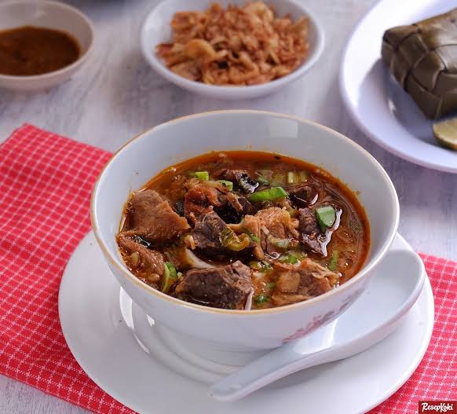

Discover the Taste of Makassar
Explore the rich flavors, stories, and culinary heritage of traditional Makassar cuisine. Temukan kekayaan rempah otentik, kisah sejarah, dan cita rasa legendaris Sulawesi Selatan.

Coto Makassar
Ikon kuliner legendaris sejak abad ke-16
Harmoni Rasa & Cerita Warisan Budaya
Mangkasara hadir untuk melestarikan dan memperkenalkan kekayaan kuliner tradisional Makassar kepada generasi muda dan wisatawan.
Keaslian Cita Rasa
Dokumentasi bahan-bahan rempah lokal pilihan dan karakteristik rasa unik dari hidangan berkuah hingga kudapan manis.
Cerita & Latar Budaya
Memahami latar belakang sejarah dan tradisi di balik sajian kuliner yang bersumber dari catatan sejarah terpercaya.
Eksplorasi Interaktif
Kemudahan mencari hidangan berdasarkan nama, menyaring kategori, menyimpan favorit, serta menemukan rekomendasi acak.
Kuliner Pilihan Makassar
Cicipi kelezatan hidangan paling ikonik yang menjadi kebanggaan masyarakat Makassar.
Lima Kategori Kuliner
Dari hidangan sup berkuah gurih pekat hingga kudapan legit pembungkus daun pisang.
Dapur tradisional Makassar adalah perjumpaan harmonis antara kekayaan hasil laut Selat Makassar yang melimpah dan kehangatan rempah jalur perdagangan Nusantara yang melegenda.